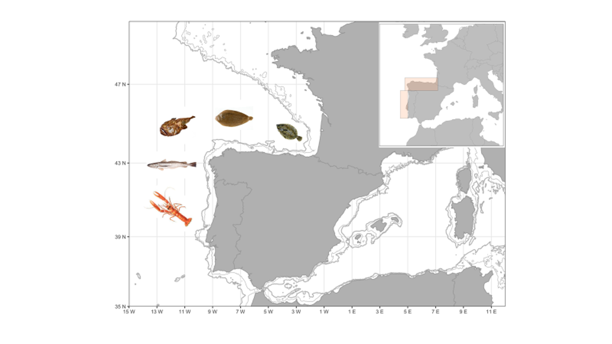

OBJETIVES AND METHODOLOGY
1) General and specific objectives.
The project goal is to develop approaches that help operationalize EBFM for the Spanish waters by filling the gap between traditional single-species stock assessment models and ecosystem models.
To achieve this overarching goal, the four main objectives of FRESCO are:
-
1) Calibrating the first ecosystem size spectra (MIZER) model for the demersal community in the Northeast Atlantic Sea;
-
2) Coupling available single-species stock assessment models with ecosystem models considering key exploited species of the Iberian marine resources in the Northeast Atlantic Sea;
-
3) Testing different harvest control rules and candidate management strategies through the developed modeling approach
-
4) Incorporating climate change projections in developed models and assess possible medium to long-term effects on marine resources and management actions and identify options for fisheries adaptations.
With these four objectives, we attempt to substantially contribute to the development of approaches for tactical and strategic fisheries management by including trophic interactions, environmental drivers, ecosystem heterogeneity, climate changes effects, and different management strategies.
2) Description of the methodology.
The study areas of FRESCO are the ICES Divisions 8c9a in the Atlantic waters (Figure 1).
This area is used as a management unit for stock assessment of fisheries target species by ICES.
The ICES Divisions 8c9a include the northern Iberian Shelf, characterized by a narrow shelf with summer upwelling events off Galicia;
the western Iberian shelf, characterized by a narrow shelf west of Portugal with summer upwelling events.
From a management perspective, TAC (Total Allowable Catches) is the major regulatory mechanism in the North-East Atlantic.
A multiannual plan was implemented to help conserve the stocks and to ensure sustainable operations within the Iberian waters (West Med MAP,
Regulation EU 2019/1022 of the European Parliament and of the Council of June 20). There are minimum landing sizes for most target species,
but they are not fully enforced, contributing to the low economic efficiency of fisheries exploitation.

Figure 1. Study area and main target species of FRESCO. ICES Divisions 8c9a in the Atlantic waters. European hake (Merluccius merluccius), common sole (Solea solea), white anglerfish (Lophius piscatorius), Norway lobster (Nephrops norvegicus) and four-spot megrim (Lepidorhombus boscii).
The main target species selected for FRESCO in the ICES Subdivisions 8c9a are European hake and sardine, the common sole (Solea solea), the white anglerfish (Lophius piscatorius), four-spot megrim (Lepidorhombus boscii) and the Norway lobster (Nephrops norvegicus). European hake is one of the most important commercial species in the area. Despite the recovery plan for the southern stock implemented in 2006 (EC 2166/2005) and the Multiannual Management Plan for Western Waters, the fish mortality rate is still above the maximum sustainable yield (FMSY), even though the spawning stock biomass is above precautionary levels.
The common sole is a data-limited stock in the ICES area and is targeted mainly by multi-species fleets using mainly trammel and gill nets. This species has been traditionally considered of high relevance due to its high commercial value. However, although in the North Sea the common sole stock is historically analytical assessed and managed, in this area, its stock status was poorly known until recently. For this reason, a precautionary TAC was applied in the last few years.
White anglerfishes are caught in mixed bottom-trawl and artisanal fisheries using mainly fixed nets. This species is often misidentified with the black anglerfish (Lophius budegassa) in landings. Species proportions in landings change but overall, the white anglerfish represented more than 60% of the total anglerfish landings. ICES perform assessments for each species separately but they are subject to a common TAC. Anglerfishes are caught in mixed fisheries, hence, management measures applied to these species may have implications for other stocks and vice versa.
The four-spot megrim is caught in mixed fisheries of bottom trawlers from Portuguese and Spanish fleets, generally targeting a heterogeneous group of demersal white fish and operating on the continental shelf and upper slope. The four-spot megrim represent 5% of the total landings of the whole fishery and they have significant commercial value in the Spanish market. This species is regulated in the area by a TAC quota system, sharing the same TAC with the other megrim species (L. whiffiagonis). Over recent decades, the TAC value has only been slightly exceeded by landings in one 3-year period.
Nephrops is one of the most valuable resources in the North East Atlantic. However, overfishing has caused the decline of several Nephrops stocks over the last decades, particularly in the Nephrops Functional Units (FUs) 25 (NW Spain) and 31 (Cantabrian Sea, North Spain). Between 1984 and 2014 the catch of FU 25 and FU 31 has decreased by 98% (i.e., from 615 t to 15 t) in line with decreasing recruitment and biomass levels. Consequently, the ICES advice for these stocks (FU 25 and FU 31) has been to reduce catch to zero since 2002. Nevertheless, this management measure was not implemented by the European Commission until 2017 in FUs 25 and 31.
All these species are evaluated each year by the FRESCO members during the ICES Working Group for the Bay of Biscay and the Iberian Waters Ecoregion (WGBIE). The stock assessment models used to evaluate their status range from data-rich to data-limited models. Indeed, the European hake and the white anglerfish are assessment with the Stock Synthesis (SS) model, four-spot megrim with Assessment for All (a4a), Nephrops with the Stochastic surplus Production model in Continuous Time (SPiCT), and the common sole with Length Based Indicators (LBI).
It is worth mentioning that although these species were selected as key species, other species could be included in the FRESCO project depending on the availability of datasets and fishery management requirements. The FRESCO modeling approach that will be developed could be then applied to other stocks.